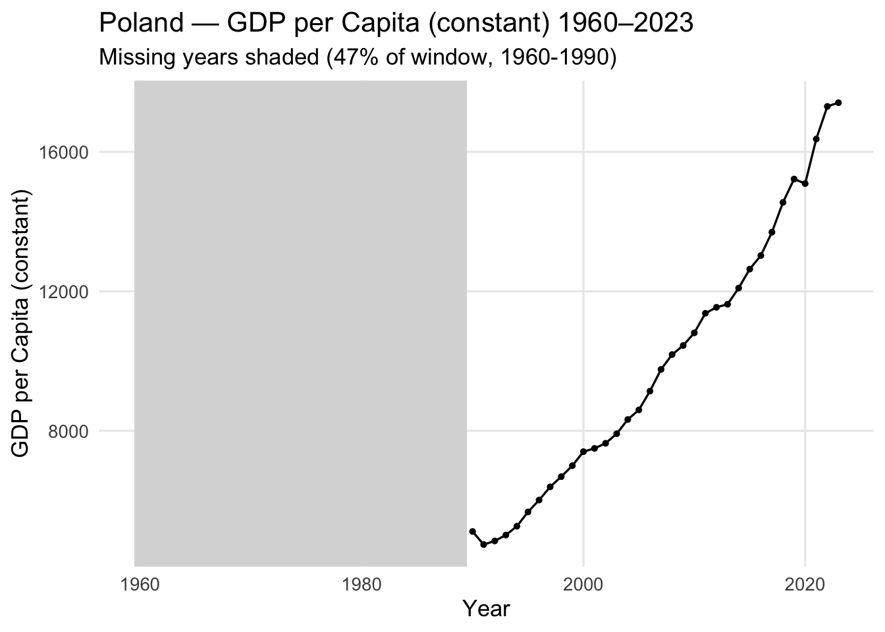

| Coverage Range by Country and Variable | |||||||
|---|---|---|---|---|---|---|---|
| Each cell shows the first and last available year | |||||||
| Country | Emp-to-Pop | Fertility | FLFPR | GDP (const) | Gini | Migration | Population |
| AUS | 1991–2024 | 1960–2023 | 1990–2024 | 1960–2024 | 1981–2020 | 1960–2024 | 1960–2024 |
| BRA | 1991–2024 | 1960–2023 | 1990–2024 | 1960–2024 | 1981–2023 | 1960–2024 | 1960–2024 |
| CAN | 1991–2024 | 1960–2023 | 1990–2024 | 1960–2024 | 1971–2021 | 1960–2024 | 1960–2024 |
| CHN | 1991–2024 | 1960–2023 | 1990–2024 | 1960–2024 | 1981–2022 | 1960–2024 | 1960–2024 |
| DEU | 1991–2024 | 1960–2023 | 1990–2024 | 1960–2024 | 1991–2020 | 1960–2024 | 1960–2024 |
| IND | 1991–2024 | 1960–2023 | 1990–2024 | 1960–2024 | 1977–2022 | 1960–2024 | 1960–2024 |
| JPN | 1991–2024 | 1960–2023 | 1990–2024 | 1960–2024 | 2008–2020 | 1960–2024 | 1960–2024 |
| KOR | 1991–2024 | 1960–2023 | 1990–2024 | 1960–2023 | 2006–2021 | 1960–2024 | 1960–2024 |
| NGA | 1991–2024 | 1960–2023 | 1990–2024 | 1960–2024 | 1985–2022 | 1960–2024 | 1960–2024 |
| POL | 1991–2024 | 1960–2023 | 1990–2024 | 1990–2024 | 1985–2023 | 1960–2024 | 1960–2024 |
| SWE | 1991–2024 | 1960–2023 | 1990–2024 | 1960–2024 | 1975–2023 | 1960–2024 | 1960–2024 |
| USA | 1991–2024 | 1960–2023 | 1990–2024 | 1960–2024 | 1963–2023 | 1960–2024 | 1960–2024 |
| ZAF | 1991–2024 | 1960–2023 | 1990–2024 | 1960–2024 | 1993–2014 | 1960–2024 | 1960–2024 |
2 Data
Our data will come from the Federal Reserve Bank of St. Louis’s FRED (Federal Reserve Economic Data) database. FRED compiles and maintains a wide range of economic and demographic indicators collected by government agencies and international organizations such as the World Bank, IMF, and OECD. The data are reported in structured time series format, usually at monthly, quarterly, or annual frequencies depending on the indicator. Each series includes detailed metadata on measurement units, coverage, and source methodology. For our project, we plan to use country-level data on fertility rates and economic growth indicators. One challenge we might face is that the time ranges and reporting frequencies can differ across datasets, which may require some cleaning and alignment before analysis. Since there is no multi-country dataset that covers all the nations we’re interested in, we will write a python script that downloads each investigated country’s data via API and then compiles a master dataset to work with. Here are example datasets for the United States of America that we would use. Many of these are available for multiple countries, hence we would scrape the same datasets, with identical units of measure, for multiple countries.
2.1 Description
Fertility Rate — FRED Series This data set is specifically from the World Bank. It is a time series dataset for the fertility rate in the United States as Births Per Woman from 1960 to 2023.
Constant GDP Per Capita — FRED Series This data set is comes from the World Bank. It is a time series dataset of the GDP per capita for the US from 1960 to 2025.
Employment-to-Population Ratio — FRED Series This data set is from the World Bank. It is a time series dataset that shows the employment rate to population ratio as a percentage.
Female Labor Force Participation Rate (Ages 15+) — World Bank Indicator This dataset comes from the World Bank, and it measures the percentage of women ages 15 and older who are part of the labor force—that is, women who are either employed or actively seeking employment. It provides insight into female engagement in the economy and helps assess how social, economic, and policy factors influence gender participation in the workforce. The data are reported annually and are available for most countries beginning in 1990.
Gini Index — FRED Series This data comes from the World Bank. The Gini index measures income inequality by calculating the area between the Lorenz curve and the line of perfect equality, where 0 represents perfect equality and 100 represents perfect inequality.
Total Population — FRED Series This data, sourced from the World Bank, shows the country’s total population. It might be useful in investigating whether immigration policies compensate for below-replacement birthrates.
Net Migration — World Bank Indicator This data set comes from the World Bank and measures the net migration rate, defined as the difference between the number of immigrants and the number of emigrants for a country over a course of a year. Positive values indicate that more people are entering the country than leaving, while negative values indicate net emigration. This variable is particularly relevant for our analysis, as migration inflows can offset demographic decline caused by falling fertility rates. We also plan to examine possible lag effects between changes in migration and subsequent shifts in population growth.
2.2 Data Collection Plan
For the data collection, we will scrape data for selected countries and then assess data completeness, as the datasets vary in their time scope from country to country. Once we evaluate missing data, we aim to address the following questions:
Country Selection: Which countries provide a holistic overview of birth rates and their correlations with our selected economic and social indicators?
Timeframe Selection: What timeframe allows us to gain valuable insights without having to impute a significant portion of the data (since heavy imputation could introduce inaccuracies)?
Handling Missing Data: How should we address missing values while preserving accuracy and comparability to the highest extent possible?
Our plan is to first compile the raw datasets via API (using Python) for each indicator and country, merge them into a master dataset, and then perform exploratory analysis on the combined and cleaned data.
2.3 Country Selection
To gain a holistic global overview of the declining birthrate problem, we decided to focus on 13 countries, spanning all 7 continents, with varying GDP per capita levels. The investigated countries range from highly populated developing economies (e.g. India) to aging advanced economies (e.g. South Korea), and span different stages of demographic transition - from high fertility (Nigeria) to very low fertility (Japan).
The final country selection is structured as follows:
| Region | Country | Rationale |
|---|---|---|
| North America | United States 🇺🇸 Canada 🇨🇦 |
Advanced economies with stable but below-replacement fertility; strong immigration inflows sustain population growth. |
| Europe | Germany 🇩🇪 Sweden 🇸🇪 Poland 🇵🇱 |
Contrasting European cases: Western vs. Central; differing immigration policies, labor structures, and fertility recovery trends. |
| Asia | India 🇮🇳 China 🇨🇳 Japan 🇯🇵 South Korea 🇰🇷 |
Broad spectrum of development and demographic stages, from rapid growth to severe aging and fertility decline. |
| Africa | Nigeria 🇳🇬 South Africa 🇿🇦 |
High-fertility versus mid-transition economies; provide insight into the early stages of demographic transition. |
| South America | Brazil 🇧🇷 | Emerging economy experiencing a steady decline in fertility while maintaining moderate population growth. |
| Oceania | Australia 🇦🇺 | Immigration-driven growth with below-replacement fertility; valuable case for lag analysis between migration and population stabilization. |
2.4 Data Collection
The data collection was done using API calls to the FRED and World Bank databases, using a python script, available here. The script created master-wide and master-long datasets, which will be used as the backbone of this project.
2.5 Date Range Selection
As shown by the data coverage table, the data differ in years covered across variables and countries. While certain variables (Fertility Rate, Net Migration, Total Population) span over 60 years for each country, others (most notably, Gini Index), have significantly shorter spans - for example, Japan’s Gini Index is only known for the 2008-2020 range.
While 1960 is the first year of recorded observations for Fertility Rate, GDP per Capita, Net Migration, and Total Population, OECD indeces (Employment-to-Population Ratio and Female Labor Force Participation) are available starting from 1991 and 1990, respectively.
Considering these date ranges across countries and variables, we can explore the interactions between long-spanning variables as the primary part of this investigation, using Employment-to-Population ratio, Female Labor Force Participation Rate, and Gini Index as auxillary variables to contextualize and enrich the analysis where their data is available. With this hybrid approach, we can maximize both temporal coverage and analytical depth, enabling broad trend analysis while still leveraging the socio-economic context captured by shorter-range indicators.
Considering that almost all variables cover data up to 2023, we decide to cap our exploration at 2023, and stick to the following date ranges for:
- 1960–2023 for Fertiity Rate, Constant GDP Per Capita, Net Migration, and Total Population
- 1991–2023 for Employment-to-Population Ratio, Female Labor Force Participation Rate, and Gini Index
2.6 Missing value analysis
With the aforementioned date ranges in mind, we can proceed to analyzing missing values, for each variable, in its respective timespan.

We see that we are missing significant proportions of Gini Index values for most countries in the covered range. With >40% missing, these are essentially incomputable and not viable for statistical analysis in combination with the other variables. Thus, we can treat the Gini Index as an extra variable that serves a contextual and interpretive role rather than a primary analytical one. It can be used to illustrate patterns or disparities in income inequality where data is available, but it should not be included in quantitative analyses or cross-variable comparisons due to its inconsistent coverage.

One more problem that we can observe in the data missingness table is the fact that 46.9% of the data between 1960 and 2023 is missing for GDP per Capita in Poland. Poland’s GDP data was only reliably reported after 1989, when the communist regime fell in the country. Thus, historical GDP data prior to the early 1990s is often incomplete or unavailable due to differences in accounting standards, data collection methods, and limited integration with international databases such as the World Bank. Therefore, for Poland, we will retain this gap rather than imputing values to preserve data consistency across sources.
